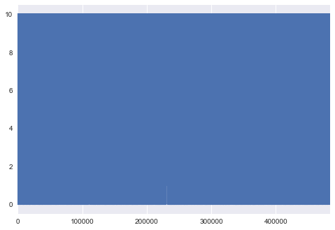

Python 3.6.0 |Anaconda custom (64-bit)| (default, Dec 23 2016, 11:57:41) [MSC v.1900 64 bit (AMD64)]
Type "copyright", "credits" or "license" for more information.
IPython 5.1.0 -- An enhanced Interactive Python.
? -> Introduction and overview of IPython's features.
%quickref -> Quick reference.
help -> Python's own help system.
object? -> Details about 'object', use 'object??' for extra details.
Restarting kernel...
In [1]: import pandas as pd
In [2]: temp = pd.DataFrame([[1,2],[1,6]],columns=['A','B'])
In [3]: temp['gs']=1
In [4]: temp.groupby('A')['gs'].count().reset_index()
Out[4]:
A gs
0 1 2
In [5]: temp.groupby('A')['B'].count().reset_index()
Out[5]:
A B
0 1 2
In [6]: temp.groupby('A')['gs'].reset_index()
Traceback (most recent call last):
File "<ipython-input-6-6b0b5a87b48e>", line 1, in <module>
temp.groupby('A')['gs'].reset_index()
File "C:\Users\LiDongNing\AppData\Roaming\Python\Python36\site-packages\pandas\core\groupby.py", line 548, in __getattr__
return self._make_wrapper(attr)
File "C:\Users\LiDongNing\AppData\Roaming\Python\Python36\site-packages\pandas\core\groupby.py", line 562, in _make_wrapper
raise AttributeError(msg)
AttributeError: Cannot access callable attribute 'reset_index' of 'SeriesGroupBy' objects, try using the 'apply' method
In [7]: temp.unstack()
Out[7]:
A 0 1
1 1
B 0 2
1 6
gs 0 1
1 1
dtype: int64
In [8]: temp.set_index('B').unstack()
Out[8]:
B
A 2 1
6 1
gs 2 1
6 1
dtype: int64
In [9]: temp = temp.set_index('B').unstack()
In [10]: temp.reset_index()
Out[10]:
level_0 B 0
0 A 2 1
1 A 6 1
2 gs 2 1
3 gs 6 1
In [11]: runfile('F:/Comptions/TC_comptition/shop_position_com/shop_position/anlysis_data.py', wdir='F:/Comptions/TC_comptition/shop_position_com/shop_position')
....连接shop_info和shop_behavior两个表
**************统计训练数据中每个商场所有bssid************
********用时11.996908187866211 s
**************统计测试数据中每条记录数据的bssid与对应商场的匹配程度********
In [12]: runfile('F:/Comptions/TC_comptition/shop_position_com/shop_position/anlysis_data.py', wdir='F:/Comptions/TC_comptition/shop_position_com/shop_position')
....连接shop_info和shop_behavior两个表
**************统计训练数据中每个商场所有bssid************
********用时12.248577356338501 s
**************统计测试数据中每条记录数据的bssid与对应商场的匹配程度********
Traceback (most recent call last):
File "<ipython-input-12-fe7650a6c842>", line 1, in <module>
runfile('F:/Comptions/TC_comptition/shop_position_com/shop_position/anlysis_data.py', wdir='F:/Comptions/TC_comptition/shop_position_com/shop_position')
File "D:\studySoftware\python\Anacanda3\lib\site-packages\spyder\utils\site\sitecustomize.py", line 866, in runfile
execfile(filename, namespace)
File "D:\studySoftware\python\Anacanda3\lib\site-packages\spyder\utils\site\sitecustomize.py", line 102, in execfile
exec(compile(f.read(), filename, 'exec'), namespace)
File "F:/Comptions/TC_comptition/shop_position_com/shop_position/anlysis_data.py", line 104, in <module>
test_compare_train = count_compare(test_data,train_mall_id_bssid)
File "F:/Comptions/TC_comptition/shop_position_com/shop_position/anlysis_data.py", line 73, in count_compare
test['same_bssid'] = test.index.map(lambda index : compare(test.loc[0],df))
File "C:\Users\LiDongNing\AppData\Roaming\Python\Python36\site-packages\pandas\core\indexes\base.py", line 2776, in map
mapped_values = self._arrmap(self.values, mapper)
File "pandas\_libs\algos_common_helper.pxi", line 2008, in pandas._libs.algos.arrmap_int64 (pandas\_libs\algos.c:41758)
File "F:/Comptions/TC_comptition/shop_position_com/shop_position/anlysis_data.py", line 73, in <lambda>
test['same_bssid'] = test.index.map(lambda index : compare(test.loc[0],df))
File "F:/Comptions/TC_comptition/shop_position_com/shop_position/anlysis_data.py", line 69, in compare
same_bssid = set(df.loc[row['mall_id']]).intersection(set(row['bssid_test']))
TypeError: unhashable type: 'set'
In [13]: runfile('F:/Comptions/TC_comptition/shop_position_com/shop_position/anlysis_data.py', wdir='F:/Comptions/TC_comptition/shop_position_com/shop_position')
....连接shop_info和shop_behavior两个表
**************统计训练数据中每个商场所有bssid************
********用时13.190079689025879 s
**************统计测试数据中每条记录数据的bssid与对应商场的匹配程度********
********用时178.9649999141693 s
In [14]: runfile('F:/Comptions/TC_comptition/shop_position_com/shop_position/anlysis_data.py', wdir='F:/Comptions/TC_comptition/shop_position_com/shop_position')
....连接shop_info和shop_behavior两个表
**************统计训练数据中每个商场所有bssid************
********用时12.389951467514038 s
**************统计测试数据中每条记录数据的bssid与对应商场的匹配程度********
********用时248.43773865699768 s
In [15]: test_compare_train.same_count.describe()
Out[15]:
count 483931.000000
mean 9.197962
std 1.532752
min 0.000000
25% 9.000000
50% 10.000000
75% 10.000000
max 10.000000
Name: same_count, dtype: float64
In [16]: (test_compare_train.same_count==0).sum()
Out[16]: 3375
In [17]: (test_compare_train.same_count==10).sum()
Out[17]: 296757
In [18]: (test_compare_train.same_count==9).sum()
Out[18]: 106485
In [19]: (test_compare_train.same_count==8).sum()
Out[19]: 38373
In [20]: (test_compare_train.same_count==7).sum()
Out[20]: 15783
In [21]: test_compare_train.same_count.plot()
Out[21]: <matplotlib.axes._subplots.AxesSubplot at 0x155a1760b38>

In [22]: test_compare_train['bssid_test_count'] = test_compare_train.bssid_test.map(lambda x :len(x))
In [23]: test_compare_train['value'] = test_compare_train['bssid_test_count'] - test_compare_train['same_count']
In [24]: test_compare_train.value.describe()
Out[24]:
count 483931.000000
mean 0.539230
std 1.130554
min 0.000000
25% 0.000000
50% 0.000000
75% 1.000000
max 10.000000
Name: value, dtype: float64
In [25]: test_compare_train['bssid_test_count'].describe()
Out[25]:
count 483931.000000
mean 9.737192
std 1.046228
min 1.000000
25% 10.000000
50% 10.000000
75% 10.000000
max 10.000000
Name: bssid_test_count, dtype: float64
In [26]: